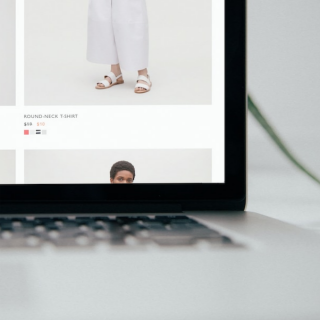
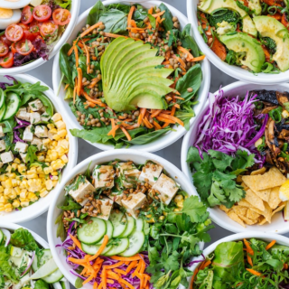

마케팅 채널별 고객 생애 가치 분석
키워드
데이터 분석 / 고객생애가치 / 고객획득비용
사용 기술
Python / Pandas / Tableau
기간
2023.04.13 ~ 2023.04.19
개인 프로젝트
프로젝트 개요
Olist 이커머스 데이터를 통해 마케팅 예산이 한정된 상황에서 유입은 증가하고 전환율이 감소하여 고객 획득 비용이 증가하는 문제를 발견했습니다. 이 문제를 해결하기 위해 마케팅 채널별 고객 생애 가치를 분석하여 높은 가치를 갖고 있는 고객 분류를 확인하였고, 상관분석과 AB 테스트를 통해 효율적으로 마케팅 예산을 배분할 할 방법을 발견하였습니다.
더 알아보기
이커머스 매출 증대를 위한 데이터 분석

키워드
데이터 분석 / 고객 분석 / 상품 분석 / 비즈니스 분석
사용 기술
Python / Pandas / Tableau
기간
2023.03.24 ~ 2023.04.12
팀 프로젝트(3인)
프로젝트 개요
Olist 이커머스 데이터를 이용하여 최근에 매출 성장세가 저조하다는 문제를 발견하여 이 문제에 대한 원인을 발견하기 위해 고객, 상품, 플랫폼에 대한 분석을 진행하였습니다. 고객 리뷰에 대한 자연어 처리(NLP)를 통해 고객의 불만 사항을 확인하였으며, 플랫폼의 마케팅 채널에 대한 분석을 통해 유입이 많고 전환율이 높은 채널을 발견했습니다. 그리고 매출 증대를 위해 전환율이 높은 채널에 대한 장단기 액션플랜을 제안했습니다.
더 알아보기
이커머스 구매전환율을 높이기 위한 고객 분석
키워드
데이터 분석 / 구매전환율 / 리텐션 / 코호트 분석
사용 기술
Python / Pandas / Seaborn / Tableau
기간
2023.03.10 ~ 2023.03.18
개인
프로젝트 개요
Fashion campus 데이터를 통해 고객의 활동은 증가하는데, 구매는 감소하여 구매전환과 매출이 감소하는 문제상황을 발견했습니다. 해당 문제를 해결하기 위해 고객 분류를 진행하여 VIP 고객과 우수고객의 리텐션이 떨어지고 있다는 사실을 발견했습니다. 그래서 문제 해결을 위한 세 가지 액션플랜을 제안했습니다.
더 알아보기
플레이리스트 속 태그를 이용한 음악 추천 프로젝트
키워드
추천 시스템
사용 기술
Python / Pandas / Tensorflow
기간
2023.02.02 ~ 2023.02.07
개인 프로젝트
프로젝트 개요
사람들의 취향이 개인화되면서 소품종 대량 생산 형식으로는 소비자들의 욕구를 충족시키기 어려워졌습니다. 그래서 다품종 소량 생산 형태로 제조 형식이 변경되었고, 기업들은 소비자에게 추천 시스템을 통해 개인의 취향에 맞는 제품 및 서비스를 제안해주었습니다. 이번 프로젝트에서는 추천 시스템에 대한 이해를 바탕으로 플레이리스트 속 태그를 통해 소비자들이 좋아할 것이라 예상되는 음악을 추천해주는 딥러닝 추천 시스템을 제작하였습니다.
더 알아보기
네이버 쇼핑 데이터를 이용한 밀키트 상품 분석 및 제품 기획

키워드
데이터베이스 / 스크레이핑
사용 기술
Python / Pandas / BeautifulSoup / PostgreSQL
기간
2022.12.30 ~ 2023.01.04
개인 프로젝트
프로젝트 개요
가구주의 연령이 낮아지고 코로나19로 인해 외식이 줄면서 간편식 및 밀키트에 대한 수요가 증가하여 간편식 및 밀키트의 시장규모가 증가했습니다. 그래서 이번 프로젝트에서는 네이버 쇼핑에서 스크레이핑을 통해 시중에서 판매가 되고 있는 밀키트 상품에 대한 정보를 수집하여 분석하였습니다. 그리고 망고플레이트에서 사람들에게 인기가 있는 매장에 대한 정보를 수집하여 소비자에게 인기있을 것이라 예상되는 밀키트를 기획하였습니다.
더 알아보기